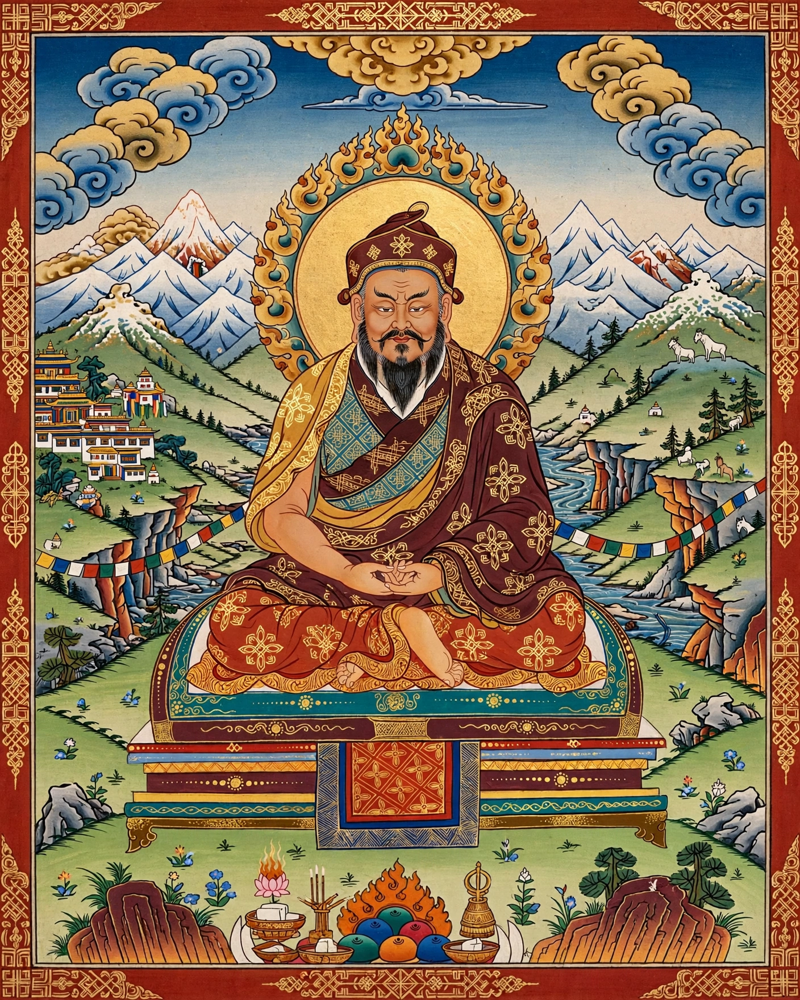

Marpa Lotsawa
| Marpa Lotsawa | |
|---|---|
 | |
| Born | 1012 Lhodrak, southern Tibet |
| Died | 1097 (aged about 85) |
| Known for | Translating Vajrayana texts from Sanskrit; teacher of Milarepa |
| Tradition | Kagyu school of Tibetan Buddhism |
| Teachers | Naropa, Maitripa |
| Chief disciple | Milarepa |
Marpa Lotsawa (Tibetan: མར་པ་ལོ་ཙཱ་བ་, 1012–1097), sometimes known in full as Marpa Chökyi Lodrö, was a Tibetan Buddhist teacher credited with the transmission of many Vajrayana teachings from India to Tibet, including the teachings of Mahamudra. Lotsawa is the Tibetan term for a translator of Sanskrit texts, and Marpa's translations and transmissions form the foundation of the Kagyu school of Tibetan Buddhism.
Life
Marpa was born to a wealthy landowning family in Lhodrak, in southern Tibet. A vigorous and, by tradition, ill-tempered youth, he was sent to study Sanskrit and Indian languages; he sold his inheritance and travelled three times to India (and four times to Nepal), spending in total some sixteen years studying with more than a hundred masters. His principal teachers were the mahasiddha Naropa, from whom he received the Six Yogas (Six Dharmas), and Maitripa, from whom he received Mahamudra teachings in the tradition of Saraha.
Milarepa
Unlike most great Tibetan masters, Marpa remained a layman — a married householder and farmer who supported his family and his travels by trade and teaching. His most famous disciple was the yogin Milarepa, whom Marpa subjected to years of gruelling trials, including repeatedly building and demolishing stone towers, before granting him the full transmissions. Marpa's lineage passed through Milarepa and Gampopa into the Kagyu schools that remain major traditions of Tibetan Buddhism.
Legacy
Marpa is revered as the first Tibetan patriarch of the Kagyu lineage. His collected songs and his life story, the Life of Marpa, compiled by Tsangnyön Heruka in the 15th century, remain classics of Tibetan religious literature, notable for portraying a realised master who farmed, traded, drank, and raised a family.
See also
References
Tsang Nyön Heruka (1982). The Life of Marpa the Translator, trans. Nalanda Translation Committee. Shambhala.